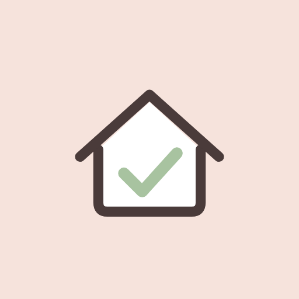

Casa em dia.
Anote agora, organize depois. O Afazer guarda o que você precisa fazer e sugere o que cabe no tempo que você tem.
Para Android e navegador
Feito para dias reais
Um app pequeno, pensado para quem abre o celular cansado e só quer saber o próximo passo.
Captura por voz
Diga a tarefa em voz alta. O app separa o que é cartão, evento ou tarefa que se repete.
Funciona sem internet
No Android, tudo é guardado no aparelho. Quando a conexão volta, o app sincroniza sozinho.
Sugestões sob medida
Diga quanto tempo você tem e o app mostra só o que cabe, sem cobrar o resto.
Tempo e prazos
Datas, lembretes e tarefas recorrentes, com avisos gentis e sem alarde.
Áreas da casa
Organize por áreas como cozinha, jardim ou trabalho, cada uma com a sua cor e imagem.
Agenda do Google
Se você quiser, os eventos aparecem na sua agenda e a sua agenda aparece no app.
All caught up.
Jot it down now, sort it out later. Afazer keeps what you need to do and suggests what fits the time you have.
For Android and the webMade for real days
A small app for the times you open your phone tired and just want to know the next step.
Voice capture
Say the task out loud. The app sorts it into a card, an event or a repeating task.
Works offline
On Android, everything is kept on the device. When the connection returns, it syncs by itself.
Suggestions that fit
Tell it how much time you have and it shows only what fits, without nagging about the rest.
Time and deadlines
Dates, reminders and repeating tasks, with gentle nudges and no fuss.
Areas of the home
Group by areas like kitchen, garden or work, each with its own color and picture.
Google Calendar
If you want, events appear in your calendar and your calendar appears in the app.